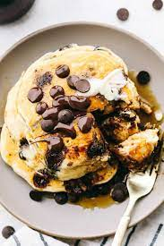

Chocolate Chip Pancakes

Chocolate Chip Pancakes
Description
This recipe will show you how to make a tasty breakfast. Everyone loves pancakes, but this will show you how to take it up a notch. Chocolate Chip Pancakes are exactly what they sound like, pancakes sprinkled with Chocolate Chips.
Ingredients (4 pancakes)
- 3/4 cup milk
- 2 tablespoons white vinegar
- 1 cup all-purpose flour
- 2 tablespoons white sugar
- 1 teaspoon baking powder
- 1/2teaspoon baking soda
- 1/4 teaspoon salt
- 1 large egg
- 2 tablespoons unsalted butter, melted
- 1 teaspoonvanilla extract
- 1/2 cup miniature chocolate chips, or more to taste
- cooking spray
Steps
- Combine milk and vinegar in a bowland set aside for 5 minutes to "sour" the milk. Basically Buttermilk.
- Combine flour, sugar, baking powder,baking soda, and salt in a large bowl.
- Whisk egg, butter, and vanilla extract into "soured" milk until well combined. Pour flour mixture into the wet ingredients and whisk until just combined. Fold in chocolate chips. Batter will be thick. Allow batter to rest for 5 minutes.
- Heat a large skillet over a medium-low heat, and coat with cooking spray.
- Pour about ¼ cup of batter for each pancake onto the skillet. Cook until bubbles appear on the surface, 2 to 4 minutes. Flip pancake with a spatula, and cook until browned on the other side, 2 to 3 more minutes. Repeat with remaining batter. Serve immediately.